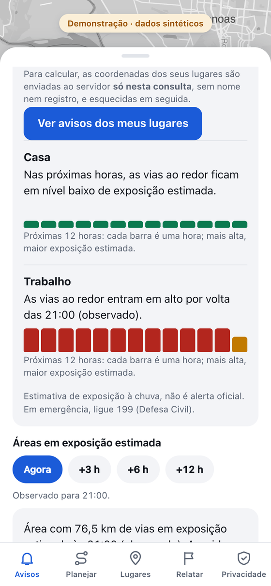
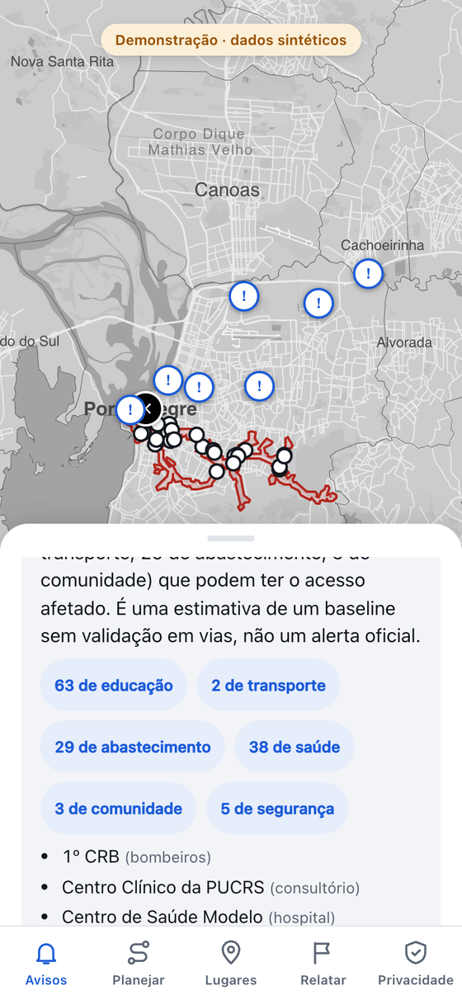
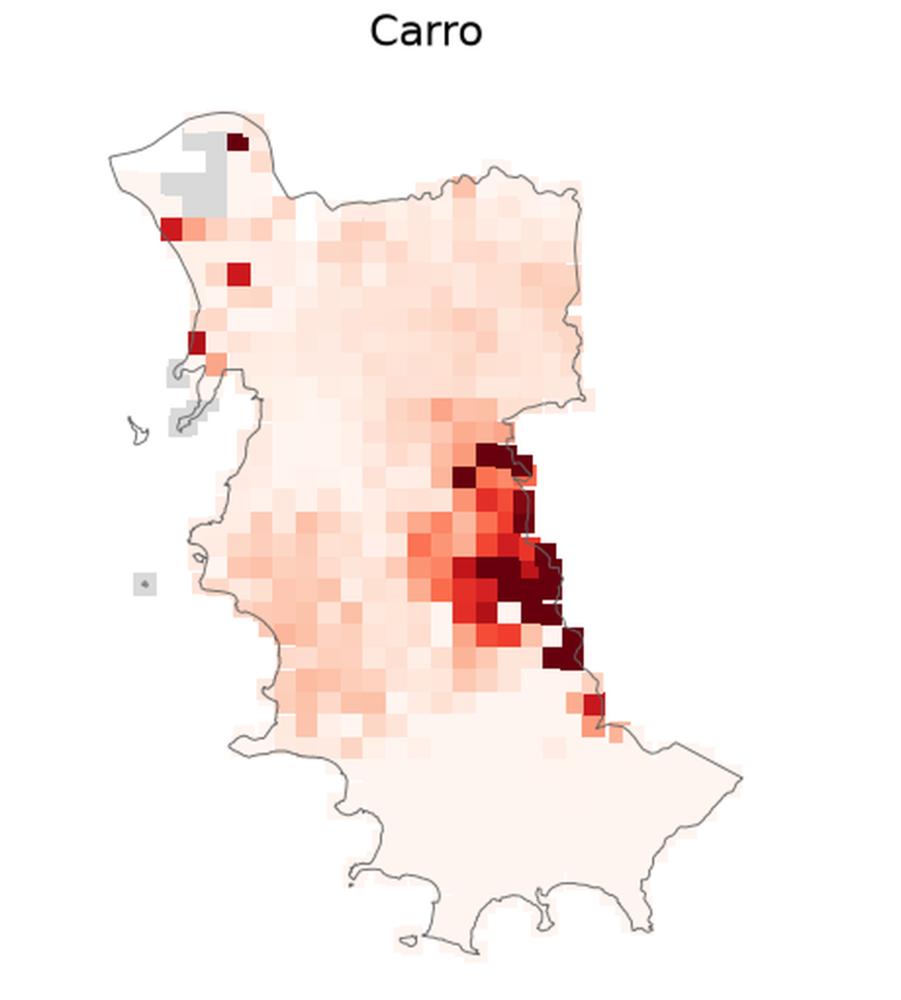

Previsão horária e histórico de reanálise, em grade de cerca de 10 km. Abaixo de 26,2 mm, nenhum trecho fecha.
FloodingMapping
Veja o que a chuva pode afetar perto de você e ajude a confirmar o que já alagou.
Avisos antes de sair
Cadastre casa, trabalho ou escola e veja se as ruas ao redor entram em exposição estimada nas próximas horas, com os hospitais, escolas e mercados que ficam dentro de cada área.
Abrir o aplicativo

Quanto chove,
quanto se perde
0%
Nenhum bloqueio é atribuído a chuvas abaixo de 26,2 mm. A cidade alcançável em 30 minutos não muda.
- Abaixo de 26,2 mm: nenhum bloqueio atribuído.
- 26 a 35 mm: 3,5% da mobilidade de carro perdida.
- 40 a 45 mm: 7% perdida; 190 mil pessoas perdem ao menos 10% do que alcançam, e em algumas áreas a perda chega a 79%.
Chuva comum, não só a extrema

14 dias
por ano em média, a chuva iguala ou passa de 26,2 mm (variação de 8 a 21, reanálise 2015–2024).
26,2 mm
é o menor acumulado em 24 horas que já coincidiu com bloqueios registrados pela EPTC.
Da chuva ao seu bairro
Quatro etapas, cada uma dizendo o que é observado, estimado ou confirmado por gente.
Bloqueios documentados pela EPTC e pontos de maior suscetibilidade do terreno entram como trechos fechados. É uma regra explícita, não um modelo treinado.
Os trechos em exposição se juntam em áreas. Cruzamos cada área com hospitais, escolas, mercados e terminais, e com os lugares que você salvou no aparelho.
Quem está na rua confirma ou diz que secou. As confirmações viram rótulos e o sistema sugere onde verificar primeiro. Nenhum apoio interdita uma via, e o modelo só entra no lugar da regra se mostrar ganho.
Feito para quem mora na cidade
Quem sai de casa
Veja se as ruas ao redor de casa, do trabalho e da escola entram em exposição estimada nas próximas horas, e trace uma rota com menor exposição.
Quem viu a rua alagada
Diga se ainda está alagado ou se já secou. Cada confirmação ajuda a priorizar onde verificar primeiro, sem interditar rua nenhuma.
Quem cuida da cidade
A mesma informação, aberta, mostra à Defesa Civil, à EPTC e ao planejamento onde a perda de acesso é maior.
Uma estimativa,
não uma previsão
- O baseline de risco por trecho detectou 4 dos 19 bloqueios documentados.
- Um modelo treinado não superou regras simples de decisão.
- A chuva é de reanálise, em grade de cerca de 10 km, não de pluviômetro.
- O ajuste entre chuva e bloqueios usa só três datas.
- Os relatos da comunidade carregam o viés de quem reporta: bairros com menos relatos aparecem menos.
- Ainda não houve teste em celular físico nem com moradores.